Tin nổi bật |
Tin nổi bật | September 4,2019 |
September 4,2019 | By: Hulkk
By: Hulkk
FL có đủ mạnh để đánh bại GAM giành vé đến thẳng vòng bảng CKTG?
Vào cuối năm 2017 và đầu 2018, cái ngày Optimus rời GAM đang thống trị VCS lúc đó để tới với Sky Gaming xây dựng đế chế cho riêng mình cùng tham vọng đến CKTG, ai cũng nghĩ đó là một quyết định quá mạo hiểm và không có nhiều cơ hội để thành hiện thực. Khó khăn cũng không ít khi mà SGD đã thất bại trong việc giành tấm vé lên VCSA ở mùa xuân 2018 rồi lại không thể đánh bại EVOS Esports để vào trận chung kết mùa xuân 2019.
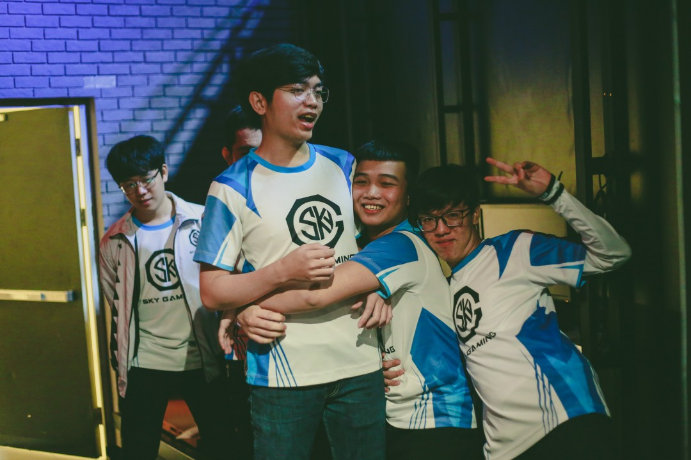SAJ OptimusSGD (Team Flash) đã không thể đến trận chung kết ở mùa xuân
Thế nhưng với sự nỗ lực của các thành viên qua từng mùa giải, sự bổ sung nhân lực đúng đắn của ban quản lý cùng với những sự tính toán của Optimus, SGD (giờ là Team Flash) vẫn ngày càng mạnh mẽ hơn và vươn lên trở thành một thế lực ở VCS. Và thành quả cho sự nỗ lực không ngừng nghỉ của “binh đoàn Autobot” chính là chiếc vé tiến vào trận chung kết VCS mùa hè ngày 14/9 sắp tới, nơi mà họ sẽ có cơ hội biến tham vọng của đội trưởng Optimus trở thành hiện thực. Đối thủ của họ không ai khác chính là GAM Esports – đội tuyển đang có một mùa giải trở lại rất mạnh mẽ sau quãng thời gian dài không thành công.
Flash giành chiến thắng thuyết phục trước DBL để tiến vào trận chung kết
Tuy nhiên tạm thời bỏ qua trận chung kết được dự báo là rất hấp dẫn này đã, chúng ta sẽ cùng điểm lại những dấu ấn trong hành trình đến trận chung kết của Flash – hành trình mà họ đã cần rất nhiều thời gian và nỗ lực để có được kết quả hiện nay.
“Dream Team” đích thực
Ngay từ khi mới đặt chân lên giải đấu cao nhất Việt Nam ở VCS mùa xuân 2019, SGD khi đó đã bị đánh giá là mất cân bằng giữa các lane khi có đường giữa và đường dưới rất mạnh nhưng lại không có được một người đi đường trên đủ trình độ “VCSA”. Liên tiếp những cái tên như Darrys, Artemis, Sunsieu, Taurus được BHL lựa chọn để thi đấu nhưng đều không mang lại hiệu quả như mong muốn.
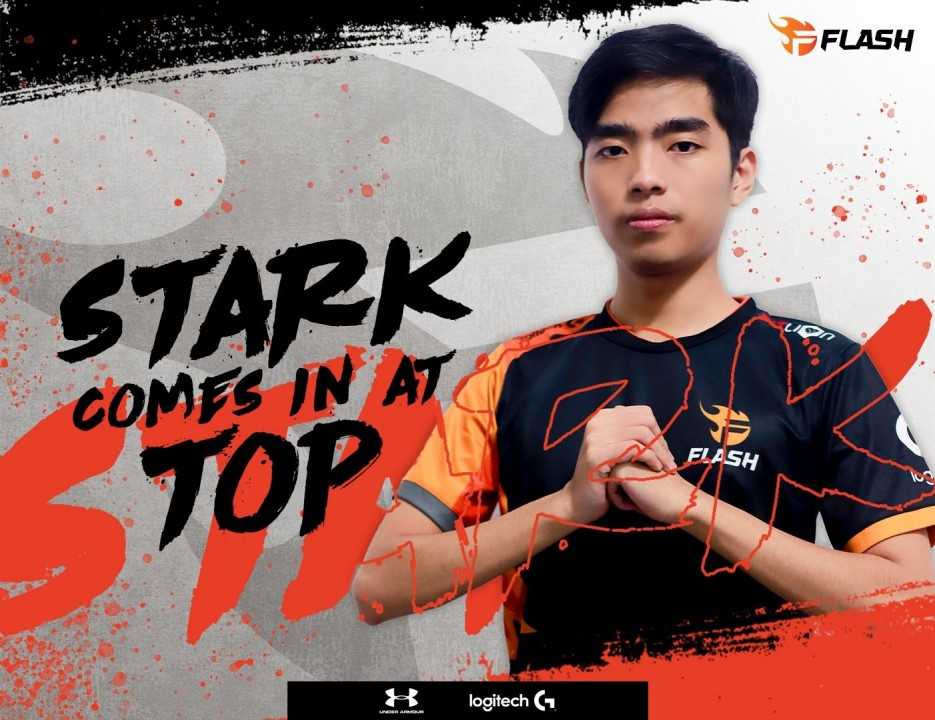Stark Là mảnh ghép cuối cùng hoàn thiện “dream team” của Flash
Nhưng mọi nỗi lo về đường trên của người hâm mộ đã được xóa bỏ hoàn toàn khi đội tuyển này đem về “Đại Đế” Stark vào giữa mùa hè vừa rồi. Cựu thành viên của EVOS là một trong những top-laner được cho là tốt nhất Việt Nam hiện tại đồng thời cũng từng là đồng đội cũ của đội trưởng Optimus. Dù khởi đầu còn chút chệch choạc nhưng ngay khi bắt được nhịp thi đấu của đội tuyển mới, Stark thi đấu ngày càng hay hơn và trở thành một vũ khí hạng nặng của đội hình FL trong những trận đấu vừa qua.
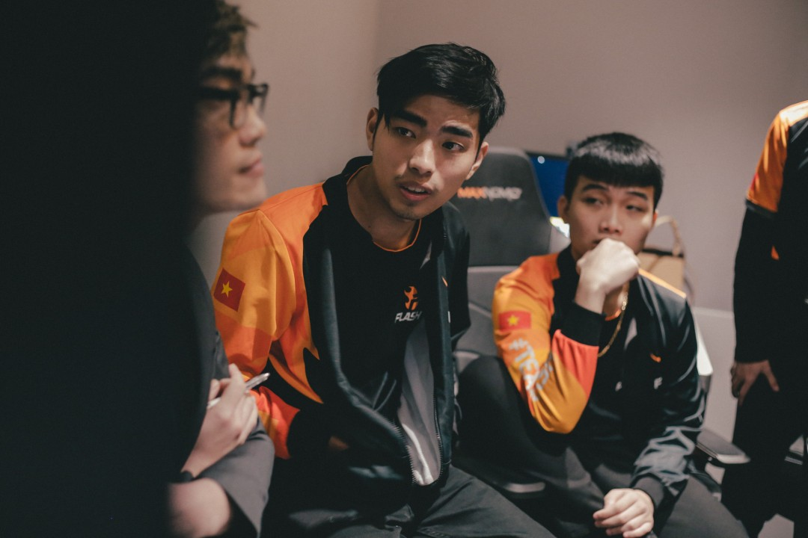Đại đế” càng đánh càng hay
Đồng đội của Stark ở EVOS mùa giải trước, Yijin cũng đang có một mùa giải rất hay trong màu áo đội tuyển mới. Đồng dẫn đầu bảng xếp hạng MVP cùng Levi với 700 điểm sau vòng bảng, tuyển thủ 18 tuổi đang là một trong những người quan trọng nhất của FL. Không như những mùa giải trước, cả Optimus và Slayder – hai chủ lực của đội đều được đôi chút giảm bớt áp lực mùa giải này nhờ những bản hợp đồng mới đang tỏa sáng ở đường trên và rừng. Dù vậy nhưng vai trò của hai người chơi này vẫn là rất lớn khi lối đánh của FL vẫn chủ yếu xoay quanh đường giữa và xạ thủ ở cuối trận.
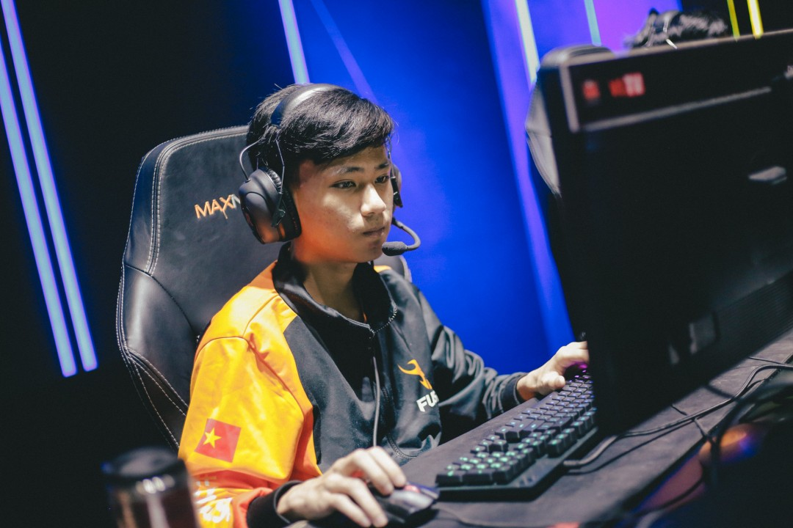Yijin đang trở thành trụ cột của FL
Slayder đang ngày một thi đấu chắc chắn với sự hỗ trợ của đàn anh, việc không còn đặt trọng tâm vào đường dưới như trước cũng khiến xạ thủ trẻ được thi đấu thoải mái hơn. Không kém những mùa giải trước, Slayder mùa này cũng có những màn gánh đội đỉnh cao gây “trầm trồ” cho người hâm mộ. Và nếu cứ tiếp tục phấn đấu thể hiện tốt ở trận chung kết sắp tới, danh hiệu xạ thủ số 1 VCS chắc chắn không thể thoát được khỏi tay của Slayder.
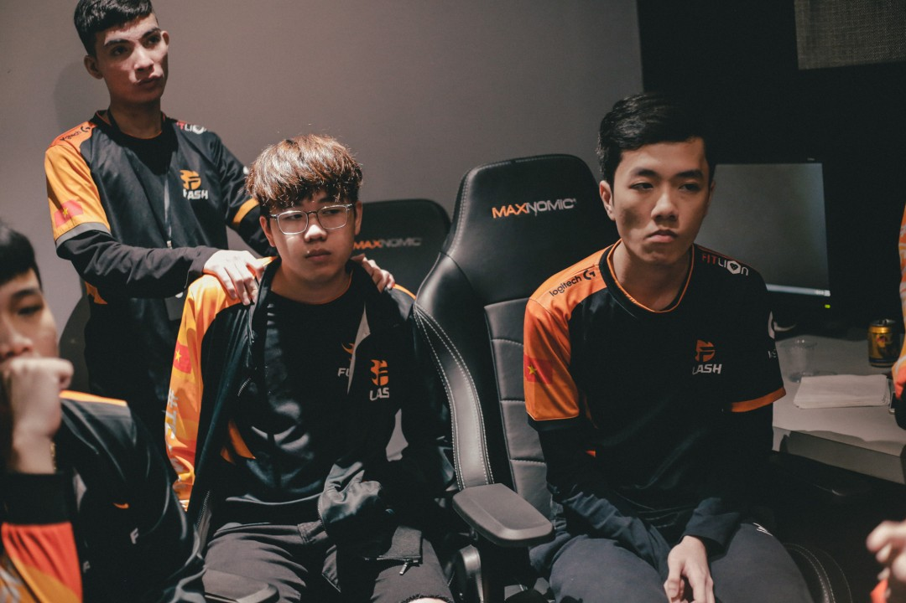Hinn hay CBL sẽ là người được chọn trong trận đấu với GAM?
Ngoài dàn line-up chính, các tuyển thủ dự bị của FL cũng là những cái tên đầy hứa hẹn. Tuy chưa thể cạnh tranh với những ngôi sao hiện tại để được thi đấu chính thức, nhưng nếu được tạo cơ hội cả Hinn, Taurus, Artemis và Kati đều có thể tạo bất ngờ khi cần.
Optimus là nhân tố không thể thay thế
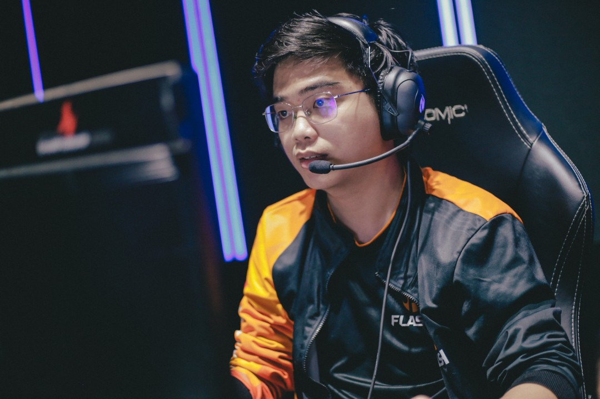“Giáo sư Cường” cứ đánh thế này thì Kati còn dự bị dài dài
Nếu những mùa trước cả đội hình Flash phải đánh xoay quanh đường dưới để tạo lợi thế cho Slayder tỏa sáng bao gồm cả Optimus, thì mùa này với dàn tuyển thủ đồng đều ở khắp các vị trí, tuyển thủ sinh năm 96 đã có nhiều đất diễn hơn với những con bài cần kỹ năng cao carry team. Có thể thấy dù thời gian qua chỉ sử dụng nhiều những tướng hỗ trợ và mang thiên hướng bảo vệ xạ thủ nhưng kỹ năng cá nhân của Optimus vẫn rất xuất sắc, nằm trong số mid-laner hàng đầu hiện nay. 600 điểm MVP sau khi kết thúc vòng bảng là một kết quả xứng đáng.
Ban huấn luyện chất lượng và chiến thuật phù hợp
Giống như đối thủ của mình trong trận chung kết, cả Flash và GAM đều đang có một đội ngũ huấn luyện làm việc rất chuyên nghiệp và hiệu quả. Jackie Wind là một trong những HLV hay nhất lượt đi khi có những phần cấm chọn hiệu quả giúp Flash có được 5 chiến thắng trong 7 vòng đấu trước khi nhường vị trí cho Sergh ở giai đoạn lượt về.
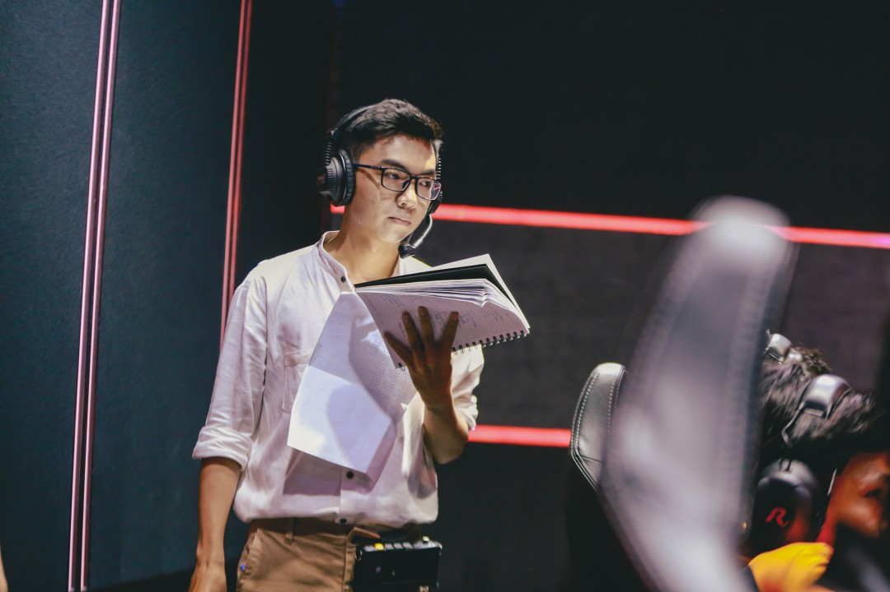Cả Jackie Wind..
Không chỉ những lúc lên sân cấm chọn, những chuẩn bị về chiến thuật của đội ngũ huấn luyện cũng rất tốt. Không còn chỉ dồn toàn lực rồi dựa và độ gánh team của Slayder, giờ đây với việc đặt niềm tin khi trao những quân bài có sức carry tốt cho cả Optimus, Yijin và cả Stark, lối chơi của Flash không còn tỏ ra một màu và dễ đoán như trước nữa.
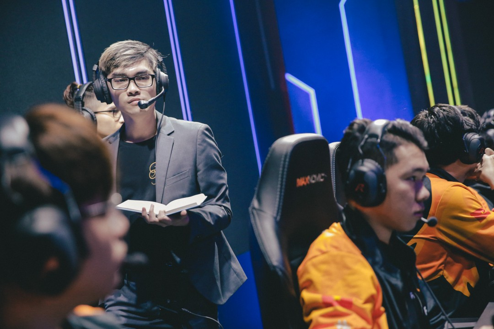..và Sergh đều đang làm rất tốt nhiệm vụ của mình
Rõ ràng với kinh nghiệm làm việc ở nhiều đội tuyển lớn của mình, cả Sergh, và Jackie Wind đã góp công lớn để Flash, có mặt ở trận đấu cuối cùng. Và sắp tới, họ sẽ cần chuẩn bị nhiều hơn khi phải đối mặt với một đội ngũ huấn luyện còn hùng hậu hơn của GAM Esports ở trận chung kết.
Tuy nhiên vẫn chưa phải mạnh nhất!
Dù mạnh mẽ là vậy nhưng đội hình của Flash, không phải là không có điểm yếu, đội hình rất chất lượng nhưng vẫn thường xuyên mắc phải những sai lầm cá nhân dẫn đến những ván thua không đáng có. Nếu hạn chế được điều này và tuân thủ đúng theo đấu pháp đưa ra thì mọi trận đấu đều sẽ là chiến thắng giành cho Team Flash.
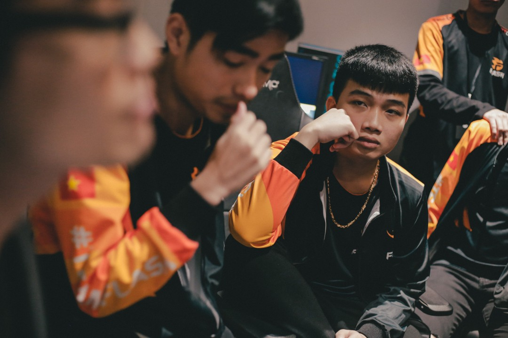Các thành viên Flash vẫn còn những điểm yếu
Ngoài ra khi đối thủ đưa ra những tình huống bất ngờ như tướng hoặc chiến thuật lạ ngoài dự tính, các thành viên của Flash cũng thường không giữ được bình tĩnh và đánh mất thế trận nhanh chóng. Trận thua FTV ở lượt về là một ví dụ: Poppy của Rika trở thành bài toán không có lời giải trong khi Optimus cùng đồng đội bị cuốn vào lối chơi giao tranh liên tục của đối thủ, kết quả cuối cùng Flash phải chịu thất bại chung cuộc trước đội tuyển đang ngụp lặn ở dưới đáy bảng xếp hạng khi đó.
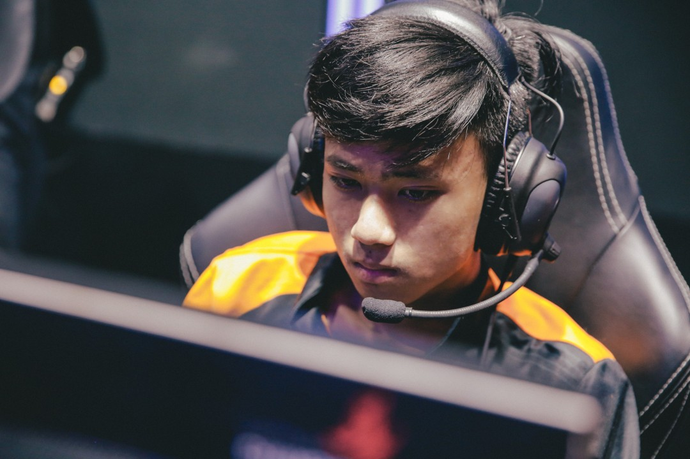Trong hai trận đấu với GAM ở mùa giải này, Flash đã có được một chiến thắng ở lượt đi và phải chịu thất bại ở tuần cuối của vòng bảng. Đội tuyển áo vàng đang là đội được đánh giá cao hơn ở thời điểm hiện tại với phong độ rất cao của các ngôi sao như Zeros và Levi, cùng sự chắc chắn ở đường dưới của Zin và Slay, ngoài ra họ còn được meta ủng hộ khi các đấu sĩ ở đường giữa đem lại lợi thế lớn cho Kiaya.
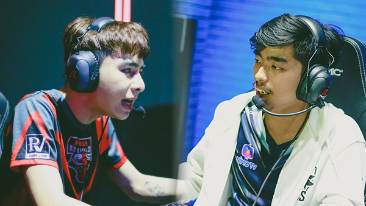Đáng chú ý không kém, Stark và Zeros sẽ có lần chạm trán đầu tiên ở mùa giải này trong màu áo mới
Thất bại trước đó có lẽ đã giúp cả ban huấn luyện và các thành viên của FL rút ra được nhiều bài học cho trận đấu quan trọng sắp tới. Nhưng có lẽ điều mà họ cần làm lúc này là cần để Yijin có được sự bùng nổ trước người đi rừng của GAM khi ở lượt về anh đã thất thế hoàn toàn và không có được tiếng nói trước Levi. Điều này là rất quan trọng khi ảnh hưởng của Levi trong các trận đấu đều đang rất lớn và để hạn chế được sức mạnh của siêu sao “dự bị quốc tế” này không phải là điều dễ làm.